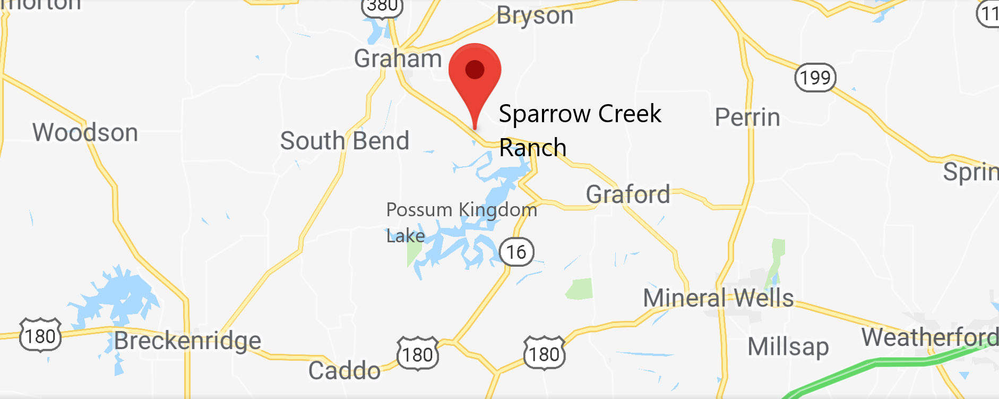

Surrounded by rolling hills, the landscape in and around the ranch is a picturesque representation of the northern part of the Texas Hill Country. Graham is home to the largest downtown-square in the nation, and it boasts antique and boutique shopping alike. Possum Kingdom Lake has several beautiful water-front resorts, most notably The Cliffs, which is also known to have one of the toughest and most beautiful golf courses in Texas. The ranch is located 6 miles southeast of Graham, Texas on Highway 16, just to the south of the nearby Wildcatter Ranch.
